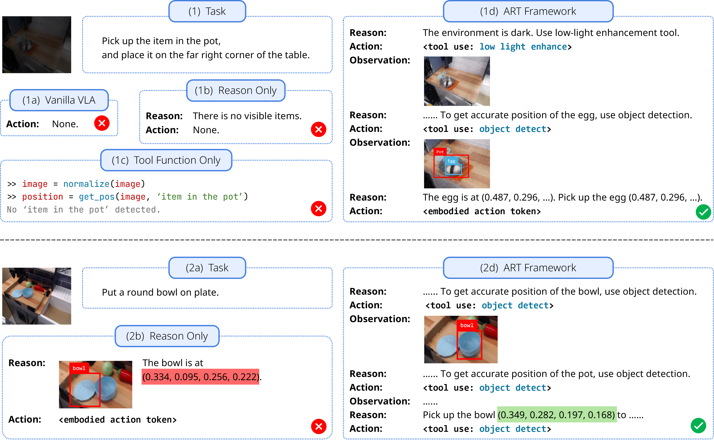
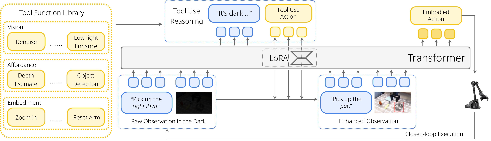

제출: 2026년 8월 14일 · 백본 π-FAST 3B · LIBERO + Astribot S1 (16 DOF 휴머노이드)
한 줄 요약 (TL;DR)
VLA(Vision-Language-Action, 시각·언어를 관측으로 받아 로봇 저수준 행동을 출력하는 모델)가 어두운 조명·흔들림·시야 편향 같은 실제 잡음에 취약한 문제를, 관측을 정제해 주는 외부 도구(tool, 저조도 개선·객체 탐지·카메라 회전 등)를 필요할 때만(on-the-fly, 관측을 보고 즉석에서) 스스로 호출하도록 LoRA(Low-Rank Adaptation, 백본을 얼려 두고 소량 파라미터만 삽입해 미세조정하는 방법) 어댑터로 학습시켜 해결하는 프레임워크. 30K 도구-사용 궤적으로 π0-FAST(3B) 백본을 튜닝한 ART-FAST는 LIBERO 시뮬 평균 75%(π0-FAST 39%), 실제 로봇 Astribot S1에서 62%(π0-FAST 43%)로 평균 약 20%p 우위.
1배경 · 문제의식
기존 VLA는 원시 관측 → 행동을 엔드투엔드(end-to-end, 중간 모듈 없이 하나의 신경망이 입력·출력을 직접 잇는 방식)로 매핑한다. 학습 분포에서 벗어난 OOD(Out-Of-Distribution, 학습에 못 본 조건) 관측(예: 저조도, 카메라 요동, 어색한 시야각)에서는 성능이 급락한다. 대안으로 나온 두 접근도 한계가 있다.
ECoT(Embodied Chain-of-Thought, 로봇용 사고연쇄 추론)류: 자연어 추론을 붙이지만 관측 자체를 개선하지 못해 심각한 시각 왜곡엔 무력.
모듈식 로봇 행동 합성(modular robotic behavior synthesis): 상용 도구(감지·계획기)를 파이프라인으로 조합하지만 저수준 행동과 단절돼 미세 조작에서 취약.
ART는 도구를 행동 공간의 일부로 통합해, VLA가 스스로 "이 상황엔 저조도 개선이 필요하다" 같은 판단을 내리고 원시 관측을 즉석 전처리한 뒤에 행동을 만들도록 설계한다.
2핵심 Contribution
Agent 로서의 VLA 개념 정립 — 도구 호출을 추가 행동 토큰으로 취급해 기존 연속 행동 예측과 통합. 원본 행동 공간 𝒜를 𝒜* = 𝒜 × ℛ × 𝒯(로봇 행동 × 언어 추론 R × 도구 T)로 확장.
On-the-fly Tool-use 프레임워크 — 매 액션 청크(action chunk, VLA가 한 번의 추론으로 뽑는 H 스텝의 미래 행동 묶음)마다 원시 관측을 보고 필요한 도구를 자율 호출·조합해 관측을 개선한 뒤 행동을 생성.
어댑터 분리 학습 레시피(adaptive LoRA) — 도구/추론 학습은 별도 LoRA 어댑터에만 반영하고 원본 VLA 백본은 동결. 행동 예측 시엔 LoRA를 끔으로써 기존 조작 능력의 파괴적 망각(catastrophic forgetting) 방지.
30K 도구-사용 궤적 데이터셋 & 자동 수집 파이프라인 — 작업 생성→도구 체인 생성→궤적 합성 3단계. 상대적으로 소규모 데이터로 SOTA 능가.
3Method
확장 행동 공간 & 세 단계 파이프라인
표준 VLA 정책 π: 관측 𝒐t ↦ 행동 청크 𝑨t를 확장한다. 각 스텝에서 정책은 (a) 추론 토큰 𝒂r,t(왜 이 도구가 필요한지 자연어), (b) 도구 토큰 𝒂t,t(어느 도구를 어떤 파라미터로), (c) 개선된 관측 𝒐̃t로부터 만든 로봇 행동 𝑨t를 순서대로 생성.
왜: 도구 호출을 별도 계획기가 아니라 VLA 자체의 출력 어휘로 다루면, 감지 실패나 시야 이상 같은 상황 판단이 정책 학습 안에서 감독될 수 있다. 도구 활성화는 매 스텝이 아니라 H 스텝(액션 청크 길이)마다 한 번만 수행해 오버헤드 최소화.
단위: 성공률(%). OpenVLA(Open Vision-Language-Action, 오픈소스 7B VLA)와 백본 π0-FAST 대비 평균 20%p 이상 향상. 특히 저조도 pick-and-place처럼 시각 왜곡이 심한 시나리오에서 격차가 크다.
Affordance 전용 태스크 (Table 2) — 시각 왜곡 유무별
모델
왜곡 있음
왜곡 없음
평균
ECoT
12
58
36
ART-FAST
72
62
67
왜곡 없을 때는 두 모델 모두 유사, 왜곡이 들어가면 ECoT는 12로 붕괴하는 반면 ART는 72로 유지. 관측을 개선하는 도구가 실제로 값을 하는 정성적 증거.
5Ablation (주요 발견)
End-to-end 학습 비교 (Table 3)
학습 방식
Vision
Embodiment
Affordance
Post-trained FAST(동일 데이터로 통상 파인튜닝)
71
61
65
ART-FAST
81
62
82
동일 데이터·동일 백본이라도 도구를 명시적 행동 토큰으로 학습하는 편이 단순 미세조정보다 우수. 특히 vision(+10)과 affordance(+17) 차원에서 큰 이득.
도구 없는 파인튜닝의 한계 — 동일 30K 데이터로 π0-FAST를 그냥 파인튜닝해도 도구 호출 학습 대비 낮음 → 성능 향상이 단순 데이터 증가가 아닌 agentic tool-use 구조에서 옴을 시사.
LoRA 분리의 효용 — 도구·추론을 LoRA에 몰아넣고 행동 예측은 백본 그대로 사용해 원본 조작 능력의 저하 없음(catastrophic forgetting 회피).
ECoT vs ART — 자연어 추론만 붙인 ECoT는 관측 자체가 나쁘면 사고연쇄가 잘못된 전제를 확대. ART는 도구로 전제(관측)를 먼저 고쳐서 실패를 원천 차단.
6핵심 Figure / Table

Figure 1 — 네 가지 VLA 패러다임 비교. (a) 표준 end-to-end VLA, (b) Chain-of-Thought(사고연쇄) 추론 결합, (c) 모듈식 로봇 행동 합성, (d) 본 논문 ART — 도구 호출을 end-to-end 행동 생성 프로세스에 직접 통합. (출처: arXiv:2608.14047)

Figure 2 — ART 아키텍처. 파인튜닝된 LoRA 모듈이 원시 관측에서 먼저 추론과 도구 호출 행동을 예측 → 활성화된 외부 도구가 vision/affordance/embodiment 세 축으로 입력을 개선 → 개선된 관측으로 최종 로봇 행동 생성. (출처: arXiv:2608.14047)
Table 1 (메인 결과) — LIBERO 평균 75(vs π0-FAST 39, OpenVLA 12), Astribot S1 평균 62(vs 43, 6.7). 시뮬·실기 모두 평균 20%p 우위라는 이 논문의 핵심 정량 근거.
Table 2 (왜곡 강건성) — ECoT는 왜곡 시 58→12로 붕괴하지만 ART는 62→72로 오히려 유지·상승. 도구가 관측을 실제로 복구함을 뒷받침.